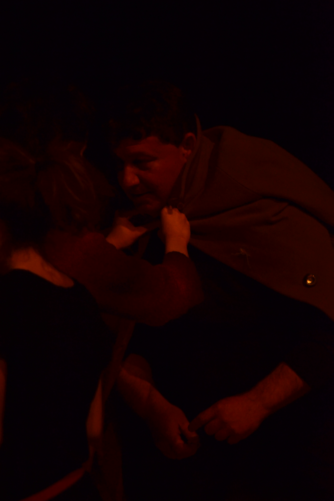
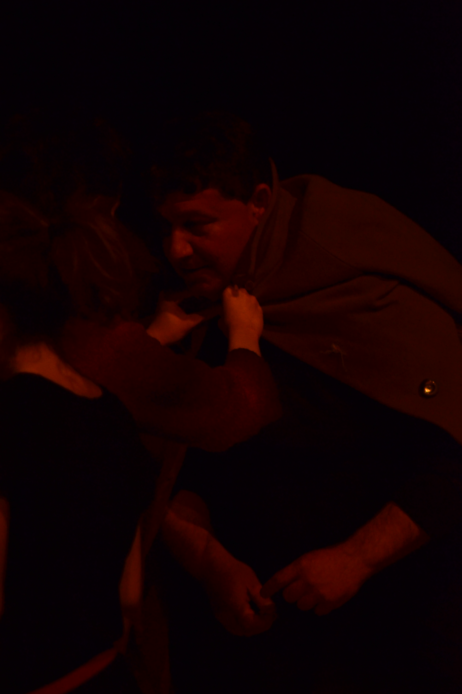

Sinossi
È uno spettacolo sulla memoria. Costruire autonomamente il passato che ci ha visti assenti con un atto concreto, attuale, contemporaneo del pensiero. Rintracciamo in questa necessità della cultura umana il valore delle testimonianze, della loro capacità di destare l'animo alla trasversalità dello spazio e del tempo rinnovando la nostra presenza. Abbiamo avvertito la memoria sorgere dalle parole ascoltate quasi per caso in incontri inaspettati e improvvisi, nelle variazioni di luce che disegnano le diverse prospettive del giorno, nelle strade e sui muri di case antiche e in parte non più, o forse non ancora, frequentate. Figure di uomini e donne, le loro voci, ci hanno raggiunto come oracoli di messaggeri divini a suggerire le linee del paesaggio e la sua visione. In cammino lasciando che a guidarci fosse solo il richiamo delle cose e il loro linguaggio, abbiamo imparato a tradurre in nuovi ricordi le notizie del passato che ci raggiungeva.
È uno spettacolo sui Partigiani e quindi sulla poesia. Abbiamo pensato all'agire di uomini e donne che in un certo momento della loro vita si sono dovuti confrontare con la necessità di preservare letteralmente il futuro alla vita. Persone che hanno avvertito l'ineluttabilità della scelta di salvare la terra, quella dei loro campi, i fiumi, i tramonti sui tetti delle loro case e dei loro paesi o le chiese delle loro riunioni, le voci e i canti della loro gente, la possibilità di crescere insieme e liberi. Li abbiamo cercati, pian piano avvicinati e forse infine incontrati nella concretezza dei nostri corpi lentamente e di nuovo educati a sentire il peso e la leggerezza, il vuoto e la pienezza, portati a vibrare o a tremare, pronti a cadere e a sollevarsi, ritornati a provare il timore e la forza, il coraggio e la debolezza, l'incertezza del successo, la sicurezza della convinzione.
Abbiamo percorso una grande vicenda umana attraverso piccole tracce di vita affidate a poche parole narrate, a poveri oggetti cui il tempo ha dato ricchezza, a qualche figura sbiadita scrivendo così un passato sconosciuto col nostro comune sentire. Abbiamo incontrato la poesia di chi ha amato e odiato quei luoghi, di chi è stato abbracciato e scacciato da quei luoghi. Abbiamo incontrato Dino Campana, partigiano prima dei partigiani. Abbiamo parteggiato per lui, per la sua infinita r-esistenza.
È uno spettacolo sullo spazio e i luoghi. Osservare le cose nella relazione che tra esse si genera, cogliere gli oggetti non singolarmente ma come prodotto del loro reciproco influenzarsi e informarsi, equivale a trasformare lo spazio in un luogo. Tutto si anima agli occhi e il tempo assume il trascorrere di vive vicende. Abbiamo lasciato che gli elementi del paesaggio ci interrogassero nelle loro forme, attraverso l'architettura delle case, le linee delle strade, nel modo in cui gli oggetti posavano suggerendo allo sguardo i gesti del loro uso. Siamo stati a Marradi, a Sant’Anna di Stazzema, Gattatico, luoghi degli eccidi nazi-fascisti, ma anche della poesia struggente di Dino Campana che lenisce, senza suturare, le ferite della violenza.
Cercare risposte ha significato costruire una trama di relazioni umane fatta di speranze, di desideri interrotti, di vittorie non godute, di sconfitte dolorose ma superate, di forti entusiasmi, di umana fiducia.
È uno spettacolo sulla contemporaneità. Ci è parso di ritrovare nei temi che abbiamo affrontato una forte relazione con la nostra attualità, se non nella vicenda narrata sicuramente nella necessità di riaffermare i fondamenti democratici della nostra socialità in un momento in cui ci sembrano smarriti. Avvertiamo la necessità di costruire un territorio comune di confronto e scambio di esperienze, di solidarietà e vicinanza, di espressione della diversità umana.
Come si costruisce la scena. Il nostro progetto è del tutto inedito risulta quindi più agevole riportare il processo di costruzione della scena piuttosto che descrivere analiticamente quanto in scena si vede. Lavoriamo in teatro a dare corpo alle visioni che abbiamo raccolto durante la nostra ricerca. Sperimentiamo la possibilità di dare scena allo spazio dei vicoli, dei cortili, del paesaggio dei villaggi e dei piccoli paesi che abbiamo visitato e frequentato cercando le tracce che hanno composto la nostra storia. Siamo attratti dalla enorme risorsa dell'attore che in una poliedrica partitura di spazio e tempo può proporre luoghi, momenti, corpi diversi. Cerchiamo una composizione di gesti e segmentazioni del corpo in grado di dare viva presenza all'azione. In una serie di fotogrammi discontinui la scena vive inizialmente nell'apparizione di figure come frammenti apparentemente diversi ma che gradualmente troveranno continuità nella costruzione di un'unica vicenda.
 
